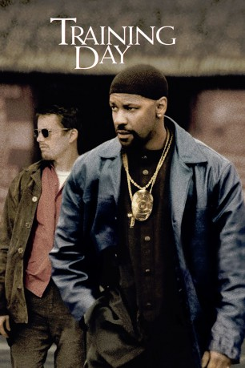

#987 Training Day
Auszeichnungen: 1 Oscars gewonnen für 1 Oscars nominiert
 
 IMDB-Wertung: 7.7 / 10
IMDB-Wertung: 7.7 / 10  Metascore: 69
Metascore: 69 
Der erste Arbeitstag als Undercover Cop läuft für Jake Hoyt völlig anders als erwartet. Sein neuer Vorgesetzter Alonzo Harris interpretiert das Gesetz auf seine eigene Weise und hält sich dabei nicht immer an die Vorschriften. Sein Motto: “Nur wenn du selbst wie ein Wolf bist, kannst du einen Wolf fangen”. Immer tiefer wird Jake in die zweifelhaften Machenschaften von Harris hineingezogen. Als die Gewalt eskaliert, muss Jake eine Entscheidung treffen.
Jahr: 2001
Dauer: 122 Minuten
FSK: 16
Land: USA Studio: Warner Bros.Tonspuren: DD5.1 - ,
Untertitel:
Auflösung: 1080p (1920x812) Größe: 4823 MB
Genre: Krimi, Drama, Thriller
Regisseur:  Antoine Fuqua
Antoine Fuqua
Drehbuch: David Ayer
Soundtrack: Mark Mancina
Darsteller:
 Denzel Washington als Det. Alonzo Harris
Denzel Washington als Det. Alonzo Harris Ethan Hawke als Jake Hoyt
Ethan Hawke als Jake Hoyt Scott Glenn als Roger
Scott Glenn als Roger Tom Berenger als Stan Gursky
Tom Berenger als Stan Gursky Harris Yulin als Doug Rosselli
Harris Yulin als Doug Rosselli Raymond J. Barry als Lou Jacobs
Raymond J. Barry als Lou Jacobs Cliff Curtis als Smiley
Cliff Curtis als Smiley- Dr. Dre als Paul
 Snoop Dogg als Blue
Snoop Dogg als Blue Macy Gray als Sandman's Wife
Macy Gray als Sandman's Wife Charlotte Ayanna als Lisa
Charlotte Ayanna als Lisa Eva Mendes als Sara
Eva Mendes als Sara Nick Chinlund als Tim
Nick Chinlund als Tim- Jaime Gomez als Mark
 Raymond Cruz als Sniper
Raymond Cruz als Sniper Noel Gugliemi als Moreno
Noel Gugliemi als Moreno- Samantha Esteban als Letty
- Kyjel N. Jolly als Alonzo's Son
 Fran Kranz als College Driver
Fran Kranz als College Driver- Seidy Lopez als Dreamer
- Sarah Danielle Madison als Female College Passenger
- Will Stewart als Crackhead #2
 Denzel Whitaker als Dimitri
Denzel Whitaker als Dimitri- Garland Whitt als Crackhead #1
- David Ayer als First Russian Hitman , uncredited
 Terry Crews als Gang Member , uncredited
Terry Crews als Gang Member , uncredited Peter Greene als Jeff , uncredited
Peter Greene als Jeff , uncredited- Namrata Singh Gujral als Latina Beauty , uncredited
- George Meyers als Cop , uncredited
 Gary Rodriguez als Precision Driver , uncredited
Gary Rodriguez als Precision Driver , uncredited- Vince Romo als Cholo , uncredited
- Julie Stranahan als Female Cop , uncredited
- Nancy Young als Russian Driver , uncredited
- Richard Browner als Waiter, Dining Car
- Ronald Ellis als Gangster
- William English als Dice Player #4
- Janeen Krikorian als Waitress, Diner
- Princera Lee als Wig Store Owner
- Robert Leon als Veterano
- Kenneth Allen Madden als Dice Player #1
- Chris Patterson als Dice Player #2
- Rudy Perez als PeeWee
- Darrel Sellers als Dice Player #3
- Ben Skorstad als LAPD Pilot
- Cle Sloan als Bone
- Brett Sorenson als Male College Passenger
- Abel Soto als Neto
- Jon A. Barnes als LAPD Street Cop , uncredited
- Michael Ray Clark als Gang Member , uncredited
- Kieran Roberts als Gang Member , uncredited
Datei: X:\2001\Training Day (2001, FSK16, 1920x812).mkv seit 03.05.2015
Festplatte: HD 1996-2002
 Es gibt insgesamt 102 Filme in der Gruppe '2001'
Es gibt insgesamt 102 Filme in der Gruppe '2001'